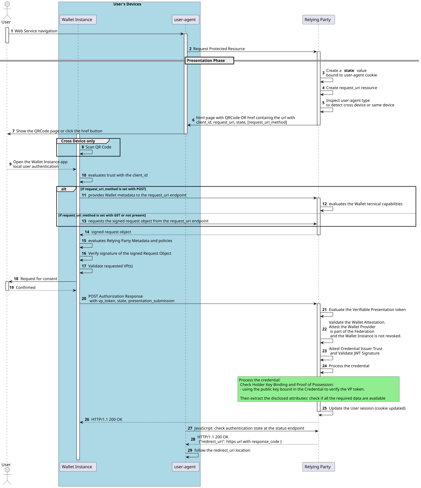

Remote Flow¶
In this flow the Relying Party MUST provide the URL where the signed presentation Request Object is available for download.
Depending on whether the User is using a mobile device or a workstation, the Relying Party MUST support the following remote flows:
Same Device, the Relying Party MUST provide a HTTP location to the Wallet Instance using a redirect (302) or an HTML href in a web page;
Cross Device, the Relying Party MUST provide a QR Code which the User frames with the Wallet Instance.
Once the Wallet Instance establishes the trust with the Relying Party and evaluates the request, the User gives the consent for the disclosure of the Digital Credentials, in the form of a Verifiable Presentation.
A High-Level description of the remote flow, from the User's perspective, is given below:
the Wallet Instance obtains an URL in the Same Device flow or a QR Code containing the URL in Cross Device flow;
the Wallet Instance extracts from the payload the following parameters:
client_id,request_uri,state,request_uri_method;If
request_uri_methodis provided and set with the valuepost, the Wallet Instance SHOULD transmit its metadata to the Relying Party'srequest_uriendpoint using the HTTP POST method and obtain the signed Request Object. Ifrequest_uri_methodis set with the valuegetor not present, the Wallet Instance MUST fetch the signed Request Object using an HTTP request with method GET to the endpoint provided in therequest_uriparameter;the Wallet Instance verifies the signature of the signed Request Object using the public key identified in the JWT header of the Request Object. Using that reference, the Wallet Instance is able to select the correct RP's public key for signature verification;
the Wallet Instance verifies that the
client_idcontained in the Request Object issuer (RP) matches with the one obtained at the step number 2 and with thesubparameter contained in the RP's Entity Configuration within the Trust Chain;the Wallet Instance evaluates the requested Digital Credentials and checks the elegibility of the Relying Party in asking these by applying the policies related to that specific Relying Party, obtained with the Trust Chain;
the Wallet Instance asks User disclosure and consent by showing the Relying Party's identity and the requested attributes;
the Wallet Instance presents the requested information to the Relying Party along with the Wallet Attestation. The Relying Party validates the presented Credentials checking the trust with their Issuers, and validates the Wallet Attestation by also checking that the Wallet Provider is trusted;
the Wallet Instance informs the User about the successfull authentication with the Relying Party, the User continues the navigation.
Below a sequence diagram that summarizes the interactions between all the involved parties.

Remote Protocol Flow¶
The details of each step shown in the previous picture are described in the table below.
Id |
Description |
|---|---|
1, 2 |
The User requests to access to a protected resource of the Relying Party. |
3, 4, |
The Relying Party provides the Wallet Instance with a URL where the information about the Relying Party are provided, along with the information about where the signed request is available for download. |
5, 6, 7, 8, 9 |
In the Cross Device Flow, the Request URI is presented as a QR Code displayed to the User. The User scans the QR Code using the Wallet Instance, which retrieves a URL with the parameters |
10, |
The Wallet Instance evaluates the trust with the Relying Party. |
11, 12 |
The Wallet Instance checks if the Relying Party has provided the |
13 |
When the Wallet Instance capabilities discovery is not supported by Relying Party, the Wallet Instance requests the signed Request Object using the HTTP method GET. |
14 |
The RP issues the Request Object signin it using one of its cryptographic private keys, where their public parts have been published within its Entity Configuration (metadata.openid_credential_verifier.jwks). The Wallet Instance obtains the signed Request Object. |
15, 16, 17 |
The Request Object, in the form of signed JWT, is verified by the Wallet Instance. The Wallet Instance processes the Relying Party metadata and applies the policies related to the Relying Party, attesting whose Digital Credentials and User data the Relying Party is granted to request. |
18, 19 |
The Wallet Instance requests the User's consent for the release of the Credentials by showing the Relying Party's identity and the requested attributes. The User authorizes and consents the presentation of the Credentials by selecting/deselecting the personal data to release. |
20 |
The Wallet Instance provides the Authorization Response to the Relying Party using an HTTP request with the method POST (response mode "direct_post.jwt"). |
21, 22, 23, 24, 25 |
The Relying Party verifies the Authorization Response, extracts the Wallet Attestation to establish the trust with the Wallet Solution. The Relying Party extracts the Digital Credentials and attests the trust to the Credentials Issuer and the proof of possession of the Wallet Instance about the presented Digital Credentials. Finally, the Relying Party verifies the revocation status of the presented Digital Credentials. |
26 (Same Device) or 28 (Cross Device) |
The Relying Party provides to the Wallet Instance the response about the presentation. |
27 (Same Device) or 29 and 30 (Cross Device) |
The authentication flow is completed by following the redirection URIs provided by Relying Party. |
31 |
The User is informed by the Wallet Instance that the Autentication succeded, then the protected resource is made available to the User. |
Request URI with HTTP POST¶
The Relying Party SHOULD provide the POST method with its request_uri endpoint
allowing the Wallet Instance to inform the Relying Party about its technical capabilities.
This feature can be useful when, for example, the Wallet Instance supports
a restricted set of features, supported algorithms or a specific url for
its authorization_endpoint, and any other information that it deems necessary to
provide to the Relying Party for interoperability.
Warning
The Wallet Instance, when providing its technical capabilities to the Relying Party, MUST NOT include any User information or other explicit information regarding the hardware used or usage preferences of its User.
If both the Relying Party and the Wallet Instance
support the request_uri_method with HTTP POST,
the Wallet Instance capabilities (metadata) MUST
be provided using an HTTP request to the request_uri endpoint of the Relying Party, with the method POST and content type set to application/x-www-form-urlencoded.
A non-normative example of the request object encoded in JSON, prior to being encoded in application/x-www-form-urlencoded by the Wallet for the Relying Party.
{
"wallet_metadata": {
"authorization_endpoint": "https://wallet-solution.digital-strategy.europa.eu/authorization",
"response_types_supported": [
"vp_token"
],
"response_modes_supported": [
"form_post.jwt"
],
"vp_formats_supported": {
"dc+sd-jwt": {
"sd-jwt_alg_values": [
"ES256",
"ES384"
]
}
},
"request_object_signing_alg_values_supported": [
"ES256"
],
"presentation_definition_uri_supported": false,
"client_id_schemes_supported": ["https"],
},
"wallet_nonce": "qPmxiNFCR3QTm19POc8u"
}
The response of the Relying Party is defined in the section below.
Device Flow Status Checks and Security¶
This specification introduces the Relying Party Presentation Request Status Endpoint for implementations that want to use it, as this endpoint is an internal feature for the security of the implementation and is not required for interoperability.
Be the flow Same Device or Cross Device, the user-agent needs to check the session status to the endpoint made available by Relying Party (status endpoint). This check MAY be implemented in the form of JavaScript code, within the page that shows the QRCode or the href button pointing to the request URL. The JavaScript code makes the user-agent check the status endpoint using a polling strategy in seconds or a push strategy (eg: web socket).
Whatever Device Flow is detected by the Relying Party (eg: by inspecting the user-agent), the page using the JavaScript code inspecting the status endpoint is always returned to the user-agent.
In the Cross Device Flow the html page that checks the status endpoint also contains the QR Code.
Using the Same Device Flow, the page that checks the status endpoint contains an href button
or http-equiv meta header parameter, redirecting to the URL defined at the section "Authorization Request Details".
Since the html page and the status endpoint are implemented by the Relying Party, it is under the Relying Party responsability the implementation details of this solution, because this is related to the Relying Party's internal API. However, the text below describes an implementation example.
The Relying Party binds the request of the user-agent, with a session cookie marked as Secure and HttpOnly, with the issued request.
The request url SHOULD include a parameter with a random value. The HTTP response returned by this status endpoint MAY contain the HTTP status codes listed below:
201 Created. The signed Request Object was issued by the Relying Party that waits to be downloaded by the Wallet Instance at the request_uri endpoint.
202 Accepted. This response is given when the signed Request Object was obtained by the Wallet Instance.
200 OK. The Wallet Instance has provided the presentation to the Relying Party's response_uri endpoint and the User authentication is successful. The Relying Party updates the session cookie allowing the user-agent to access to the protected resource. An URL is provided carrying the location where the user-agent is intended to navigate.
401 Unauthorized. The Wallet Instance or its User have rejected the request, or the request is expired. The QRCode page SHOULD be updated with an error message.
Below a non-normative example of the HTTP Request to the status endpoint, where the parameter id contains an opaque and random value:
GET /session-state?id=3be39b69-6ac1-41aa-921b-3e6c07ddcb03
HTTP/1.1
HOST: relying-party.example.org
When the status endpoint returns 200 OK, it means that the User authentication is successful and the JavaScript code will use the returned location where the user-agent will be redirect to continue the navigation.
Even if an adversary were to steal the random value used in the request to the status endpoint, their user-agent would be rejected due to the missing cookie in the request.
Request URI Request¶
The request and its parameters are defined in Section number 5 (Authorization Request) of OpenID4VP. Below normative details and references about the parameters to be used by the Wallet Instance in the request.
Parameter |
Description |
|---|---|
wallet_metadata |
OPTIONAL. JSON object with metadata parameters. See OpenID4VP, Section 9.1 and the table below, "Wallet Metadata Parameters". |
wallet_nonce |
RECOMMENDED. String used by Wallet Instance to prevent replay of the RP's responses. See OpenID4VP, Section 9. |
Parameter |
Description |
|---|---|
presentation_definition_uri_supported |
OPTIONAL. Boolean. When present it MUST be set to false, default is false. |
vp_formats_supported |
REQUIRED. Object with Credential format identifiers. See OpenID4VP Appendix B. |
alg_values_supported |
OPTIONAL. Array of cryptographic suites supported. See OpenID4VP Appendix B. |
client_id_schemes_supported |
RECOMMENDED. Array of Client Identifier schemes. Default is entity_id. |
authorization_endpoint |
URL of the authorization server's endpoint, see OAUTH2. Using an universal link is preferable for enhanced security and fallback support, custom url schemes can also be used if necessary. |
response_types_supported |
OPTIONAL. JSON array of OAuth 2.0 "response_type" values. If present it MUST be set to vp_token. Default is vp_token. |
response_modes_supported |
OPTIONAL. JSON array of OAuth 2.0 "response_mode" values. See JARM. |
request_object_signing_alg_values_supported |
OPTIONAL. See OpenID Connect Discovery. |
Below a non-normative example of HTTP request made by the Wallet Instance to the Relying Party.
POST /request HTTP/1.1
Host: client.example.org
Content-Type: application/x-www-form-urlencoded
wallet_metadata%3D%7B%22authorization_endpoint%22%3A%20%22eudiw%3A%22%2C%20%22response_types_supported%22%3A%20%5B%22vp_token%22%5D%2C%20%22response_modes_supported%22%3A%20%5B%22form_post.jwt%22%5D%2C%20%22vp_formats_supported%22%3A%20%7B%22dc%2Bsd-jwt%22%3A%20%7B%22sd-jwt_alg_values%22%3A%20%5B%22ES256%22%2C%20%22ES384%22%5D%7D%7D%2C%20%22request_object_signing_alg_values_supported%22%3A%20%5B%22ES256%22%5D%2C%20%22presentation_definition_uri_supported%22%3A%20false%7D%2C%20wallet_nonce%3DqPmxiNFCR3QTm19POc8u
Note
The wallet_nonce parameter is RECOMMENDED for Wallet Instances that wants to prevent reply of their http requests to the Relying Parties.
When present, the Relying Party MUST evaluate it.
Note
For the authorization_endpoint the use of universal links are preferred over custom url-schemes because, when properly configured using Assetlinks JSON for Android and Apple App Site Association for iOS, they provide enhanced security by reducing the risk of URL hijacking.
Furthermore, universal links offer fallback mechanisms, allowing the flow to continue seamlessly in a browser even if the Wallet Instance is not installed, ensuring a smoother User experience. To ensure interoperability, support custom url-schemes is also RECOMMENDED according to OpenID4VC High Assurance Interoperability Profile (HAIP) OPENID4VC-HAIP, and in particular using the custom url haip://.
Request Object Details¶
The Relying Party issues the signed Request Object using the content type set to application/oauth-authz-req+jwt,
where a non-normative example in the form of decoded header and payload is shown below:
{
"alg": "ES256",
"typ": "oauth-authz-req+jwt",
"kid": "9tjiCaivhWLVUJ3AxwGGz_9",
"trust_chain": [
"MIICajCCAdOgAwIBAgIC...awz",
"MIICajCCAdOgAwIBAgIC...2w3",
"MIICajCCAdOgAwIBAgIC...sf2"
]
}
.
{
"client_id": "https://relying-party.example.org",
"response_mode": "direct_post.jwt",
"response_type": "vp_token",
"dcql_query": {
"credentials": [
{
"id": "personal id data",
"format": "dc+sd-jwt",
"meta": {
"vct_values": [ "https://pidprovider.example.org/v1.0/personidentificationdata" ]
},
"claims": [
{"path": ["given_name"]},
{"path": ["family_name"]},
{"path": ["personal_administrative_number"]}
]
},
{
"id": "wallet unit attestation",
"format": "jwt",
"claims": [
{"path": ["iss"]},
{"path": ["iat"]},
{"path": ["cnf"]}
]
}
]
},
"response_uri": "https://relying-party.example.org/response_uri",
"nonce": "2c128e4d-fc91-4cd3-86b8-18bdea0988cb",
"wallet_nonce": "qPmxiNFCR3QTm19POc8u",
"state": "3be39b69-6ac1-41aa-921b-3e6c07ddcb03",
"iss": "https://relying-party.example.org",
"iat": 1672418465,
"exp": 1672422065,
"request_uri_method": "post"
}
The JWT header parameters are described below:
Name |
Description |
|---|---|
alg |
Algorithm used to sign the JWT, according to [RFC 7516#section-4.1.1]. It MUST be one of the supported algorithms in Section Cryptographic Algorithms and MUST NOT be set to |
typ |
Media Type of the JWT, as defined in [RFC 7519] and [RFC 9101]. It SHOULD be set to the value |
kid |
Key ID of the public key needed to verify the JWT signature, as defined in [RFC 7517]. REQUIRED when |
trust_chain |
Sequence of Entity Statements that composes the Trust Chain related to the Relying Party, as defined in OID-FED Section 4.3 Trust Chain Header Parameter. |
The JWT payload parameters are described herein:
Name |
Description |
|---|---|
client_id |
Unique Identifier of the Relying Party. |
response_mode |
It MUST be set to |
dcql_query |
Object representing a request for a presentation of Credentials, according to the DCQL query language defined in Section 6 of OpenID4VP. |
response_type |
It MUST be set to |
wallet_nonce |
String value used to mitigate replay attacks of the response, as defined in Section 5.11 (Request URI Method) of OpenID4VP. It MUST be present if previously provided by Wallet Instance. |
response_uri |
The Response URI to which the Wallet Instance MUST send the Authorization Response using an HTTP request using the method POST. |
nonce |
Fresh cryptographically random number with sufficient entropy, which length MUST be at least 32 digits. |
state |
Unique identifier of the Authorization Request. |
iss |
The entity that has issued the JWT. It will be populated with the Relying Party client id. |
iat |
Unix Timestamp, representing the time at which the JWT was issued. |
exp |
Unix Timestamp, representing the expiration time on or after which the JWT MUST NOT be valid anymore. |
request_uri_method |
String determining the HTTP method to be used with the request_uri endpoint to provide the Wallet Instance metadata to the Relying Party. The value is case-insensitive and can be set to: get or post. The GET method, as defined in [@RFC9101], involves the Wallet Instance sending a GET request to retrieve a Request Object. The POST method involves the Wallet Instance requesting the creation of a new Request Object by sending an HTTP POST request, with its metadata, to the request URI of the Relying Party. |
Warning
For security reasons and to prevent endpoint mix-up attacks, the value contained in the response_uri parameter MUST be one of those attested by a trusted third party, such as those provided in the openid_credential_verifier metadata within the response_uris parameter, obtained from the Trust Chain about the Relying Party.
Note
The following parameters, even if defined in [OID4VP], are not mentioned in the previous non-normative example, since their usage is conditional and may change in future release of this documentation.
presentation_definition: JSON object according to Presentation Exchange. This parameter MUST not be present whenpresentation_definition_uriorscopeare present.presentation_definition_uri: Not supported. String containing an HTTPS URL pointing to a resource where a Presentation Definition JSON object can be retrieved. This parameter MUST be present whenpresentation_definitionparameter or ascopevalue representing a Presentation Definition is not present.client_metadata: A JSON object containing the Relying Party metadata values. If theclient_metadataparameter is present, the Wallet Instance MUST ignore it and consider the client metadata obtained through the OpenID Federation Trust Chain.
Request URI Endpoint Errors¶
When the Relying Party encounters errors while issuing the Request Object from the request_uri endpoint, the error responses defined in OpenID4VP, Section 7.5. (Error Response) are applicable.
The following is an example of an error response from request_uri endpoint:
HTTP/1.1 400 Bad Request
Content-Type: application/json
{
"error": "invalid_request",
"error_description": "The request_uri is malformed or does not point to a valid Request Object."
}
Another example:
HTTP/1.1 500 Internal Server Error
Content-Type: application/json
{
"error": "server_error",
"error_description": "The request_uri cannot be retrieved due to an internal server error."
}
There are cases where the Wallet Instance cannot validate the Request Object or the Request Object results invalid. This error occurs if the Request Object is successfully fetched from the request_uri but fails validation checks by the Wallet Instance. This could be due to incorrect signatures, malformed claims, or other validation failures, such as the revocation of its issuer (Relying Party).
Upon receiving an error response, the Wallet Instance SHOULD inform the User of the error condition in an appropriate manner. Additionally, the Wallet Instance SHOULD log the error and MAY attempt to recover from certain errors if feasible. For example, if the error is server_error, the Wallet Instance MAY prompt the User to re-enter or scan a new QR code, if applicable.
Warning
The current OpenID4VP specification outlines various error responses that a Wallet Instance may return to the Relying Party (Verifier) in case of faulty requests. For privacy enhancement, Wallet Instances SHOULD NOT notify the Relying Party of faulty requests in certain scenarios. This is to prevent any potential misuse of error responses that could lead to gather informations that could be exploited.
SD-JWT Presentation¶
SD-JWT defines how an Holder can present a Credential to a Verifier proving the legitimate possession
of the Credential. For doing this the Holder MUST include the KB-JWT in the SD-JWT,
by appending the KB-JWT at the end of the of the SD-JWT, as represented in the example below:
<Issuer-Signed-JWT>~<Disclosure 1>~<Disclosure 2>~...~<Disclosure N>~<KB-JWT>
To validate the signature on the Key Binding JWT, the Verifier MUST use the key material included in the Issuer-Signed-JWT.
The Key Binding JWT (KB-JWT) signature validation MUST use the public key included in the SD-JWT,
using the cnf parameter contained in the Issuer-Signed-JWT.
When an SD-JWT is presented, its KB-JWT MUST contain the following parameters in the JWT header:
Claim |
Description |
|---|---|
typ |
REQUIRED. MUST be |
alg |
REQUIRED. Signature Algorithm using one of the specified in the section Cryptographic Algorithms. |
When an SD-JWT is presented, the KB-JWT signature MUST be verified by the same public key included in the SD-JWT within the cnf parameter. The KB-JWT MUST contain the following parameters in the JWT payload:
Claim |
Description |
|---|---|
iat |
REQUIRED. The value of this claim MUST be the time at which the Key Binding JWT was issued, using the syntax defined in [RFC7519]. |
aud |
REQUIRED. The intended receiver of the Key Binding JWT. The value of this parameter MUST match the Relying Party unique entity identifier. |
nonce |
REQUIRED. Ensures the freshness of the signature. The value type of this claim MUST be a string. The value MUST match with the one provided in the request object. |
sd_hash |
REQUIRED. The base64url-encoded hash digest over the Issuer-signed JWT and the selected disclosures. |
Revocation Checks¶
The revocation mechanisms that the Relying Parties MUST implement are defined in the section (Revocations).
In the context of Digital Credential evaluation, any Relying Parties (RPs) establishes internal policies that define the meaning and value of presented Credentials. This is particularly important in scenarios where a Credential may be suspended but still holds value for certain purposes. For example, a suspended mobile driving license might still be valid for verifying the age of the holder.
The process begins with the RP requesting specific Credentials from the Holder. This request should align with the Relying Party's requirements and the context in which the Credentials will be used. The Holder then responds by releasing the requested Credentials.
Upon receiving the Credentials, the Relying Party evaluates their validity and value based on its internal policies. This evaluation considers the current status of the Credential (e.g., active, suspended, revoked) and the specific use case for which the Credential is being presented.
Relying Parties should develop comprehensive internal policies that outline how different types of Credentials are to be evaluated. These policies should address scenarios where a Credential may be partially valid or have limited applicability. Flexibility in evaluation processes is important to accommodate various use cases. For instance, a Credential that is suspended for driving purposes might still be acceptable for age verification.
Redirect URI¶
As defined in Section 7.2. (Response Mode "direct_post") of the OpenID4VP specification, if the Response URI has successfully been processed, the Relying Party MUST respond with an HTTP status code of 200 and a JSON object in the response body containing the redirect_uri parameter. The Content-Type of the response SHOULD be set to application/json.
When the Relying Party provides the redirect URI, the Wallet Instance MUST redirect the user-agent to the location defined in the redirect URI. The redirect URI allows the Relying Party to continue the interaction with the End-User on the device where the Wallet Instance resides after the Wallet Instance has sent the Authorization Response to the response URI.
The Relying Party MUST include a response code within the redirect URI. The response code is a fresh, cryptographically random number used to ensure only the receiver of the redirect can fetch and process the Authorization Response. The number could be added as a path component, as a parameter or as a fragment to the URL. It is RECOMMENDED to use a cryptographic random value of 128 bits or more at the time of the writing of this specification.
The following is a non-normative example of the response from the Relying Party to the Wallet Instance upon receiving the Authorization Response at the Response Endpoint.
HTTP/1.1 200 OK
Content-Type: application/json
{
"redirect_uri": "https://relying-party.example.org/cb?response_code=091535f699ea575c7937fa5f0f454aee"
}
The redirect_uri value MUST be used with an HTTP method GET by either the Wallet Instance or the user-agent to redirect the User to a specific RP's endpoint in order to complete the process. The value can be added as a path component, as a fragment or as a parameter to the URL according to Section 6.2 of OpenID4VP. The specific entity that performs this action depends on whether the flow is Same device or Cross device.
Warning
For security reasons and to prevent endpoint mix-up attacks, the value contained in the redirect_uri parameter MUST be one of those attested by a trusted third party, such as those provided in the openid_credential_verifier metadata within the redirect_uris parameter, obtained from the Trust Chain about the Relying Party.
Redirect URI Errors¶
When the Wallet Instance sends the user-agent to the Redirect URI provided by the Relying Party, several errors may occur that prevent the successful completion of the process. These errors are critical as they directly impact the User experience by hindering the seamless flow of information between the Wallet Instance and the Relying Party. Below are potential errors related to the Redirect URI and their implications:
Mismatched Redirect URI: This error occurs when the Redirect URI provided by the Relying Party does not match any of the URIs linked with the User session. This mismatch can lead to a HTTP status error code set to 403 (Forbidden), indicating that the request cannot be processed due session/URI mismatch.
Redirect URI Security Issues: If the Relying Party incurs in security issues when evaluating the User session with the provided URI, the Relying Party MUST raise an error. In such cases, an HTTP status code set to 403 (Forbidden) MUST be returned, indicating that the request is valid but the server is refusing action due to security precautions.
Handling these errors requires clear communication to the User within the returned navigation web page. It is crucial for the Relying Party to implement robust error handling and validation mechanisms for Redirect URIs to ensure a secure implementation.